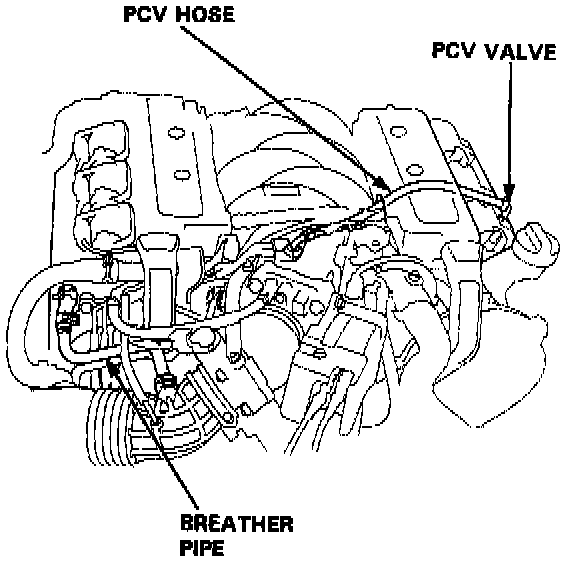
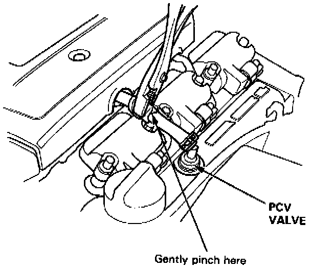

Positive Crankcase Ventilation Valve: Testing and Inspection

1. Check the PCV hoses and connections for leaks and clogging.

2. At idle, make sure there is a clicking sound from the PCV valve when the hose between PCV valve and intake manifold in lightly pinched with your fingers or pliers.
- If there is no clicking sound, check the PCV valve grommet for cracks or damage. If the grommet is OK, replace the PCV valve and recheck.